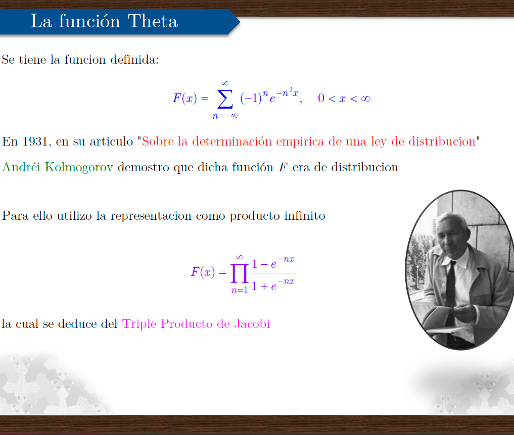

A cluster of great formulas
Probabilistic Theory of Numbers • (2026-1)
Based on K. L. Chung's article "A Cluster of Great Formulas", this talk validates the Theta function $F(x)=\sum_{n=-\infty}^{\infty}(-1)^{n}e^{-n^{2}x}$ as a cumulative distribution function using two stochastic approaches. We first identify it as the distribution of the supremum of a random sequence via the Jacobi Triple Product, and subsequently, by analyzing its Laplace transform with Euler's sine product formula, we characterize it as the distribution of a weighted sum of independent exponential variables.
